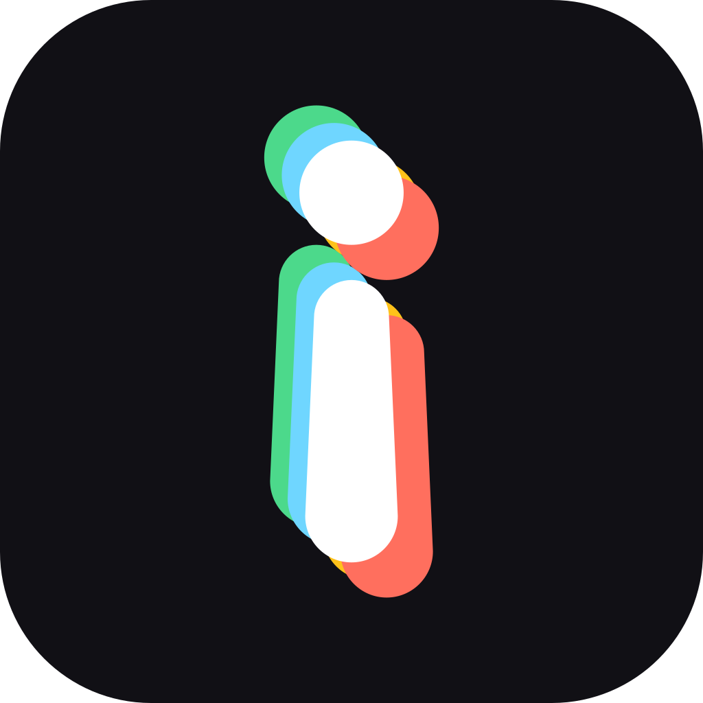
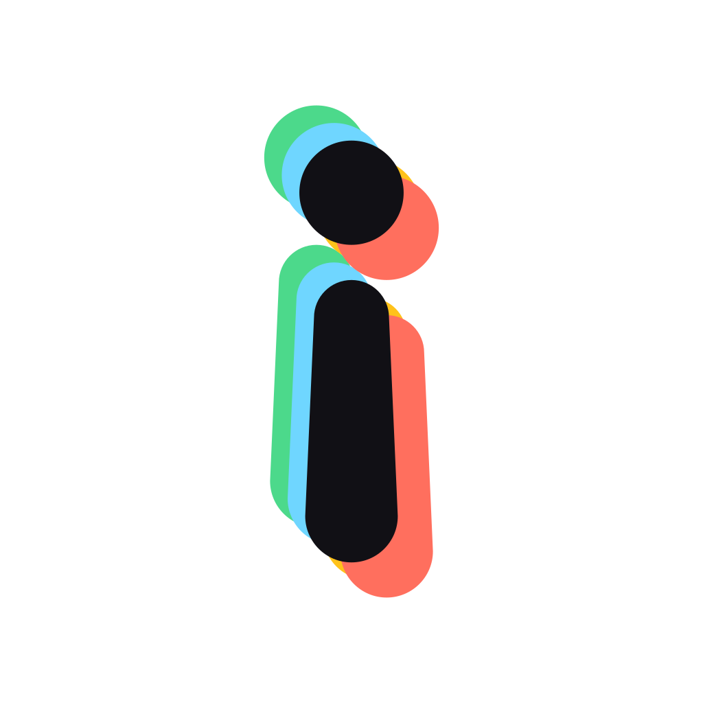
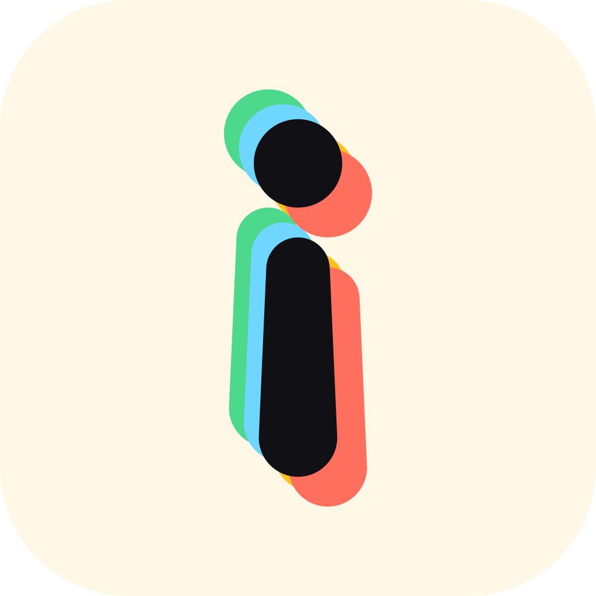

icanspeak brand kit
Logo, icons, colours, type and tiles. Rules: BRAND.md · destinations: MANIFEST.md
Wordmark
english
App icon and favicons



Colours
Navy #172A6E
Sun yellow #FFC21A · Regi
Sky #6FD6FF · Bruno
Coral #FF6F5E · Quaki
Green #4CD98B · Hamsti
Near-black #111015
Butter #FFE29A
Powder blue #BFE3FF
Peach #FFC4B8
Mint #BDEFD2
Tiles
In the apps, the plain colour tiles hold the mascots (Mascot component), each on its own colour.